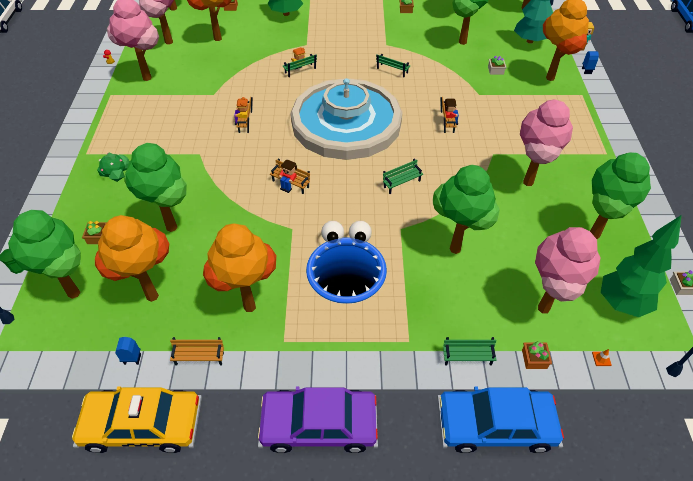
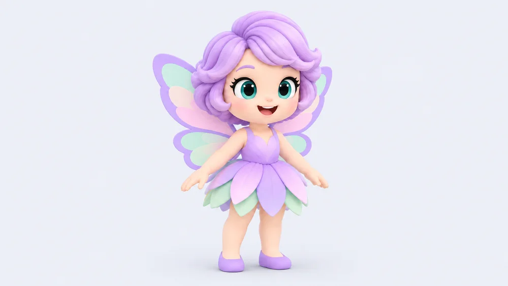

Open
Gulp: playing with friends
20261002-gulp-play-together
What is the one easy path for up to four children to join and play one Gulp round, each on their own device?
mockup-shelf-4330 · 7 rounds, 0 canonical screens
Questions still being asked.

What is the one easy path for up to four children to join and play one Gulp round, each on their own device?
Decided. The pick is recorded in the round README.

How do Rainbow Racer's unicorn and fairy become chunky game characters built in code?
Picked: B
Which darker arcade look (start screens, fire, explosions, water, guns) should Ship Battle have?
Picked: C start screens, B effects

Gulp's round controls look flat; how do we give them depth?
Picked: D

Can simpler far models give smooth late-game play without looking less friendly?
Picked: Today
The visual design is fine; what would fix the UX?
Picked: 6 of 10 proposals